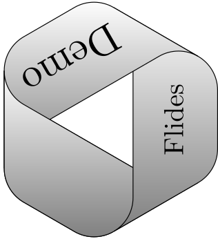

Flides Demo
Nathanaël Fijalkow
There are three main files: index.html, flides.js and style.css
Based on HTML5 and javascript technologies only.
Navigation
press "right" to uncover the next element of the current slide, or to go to the next slide when they are no further elements to uncover
press "left" to cover all elements of the current slide, or to go to the previous slide when they are no further elements to cover
press "down" or "page down" to uncover all elements of the current slide

MathJax produces maths: $f : A^* \to \mathbb{N} \cup \{ \infty \}$
Animations
Press "space" for animations
Use SVG, it's cool!
Overviews
There are two kinds of overviews:
- The "overview_intermediate" displays the slides that have been seen already.
- The "overview" slide, which is the last. Go to the overview with "enter".
At any moment, start over with "backspace".
From the overview, click on a slide to go to it!